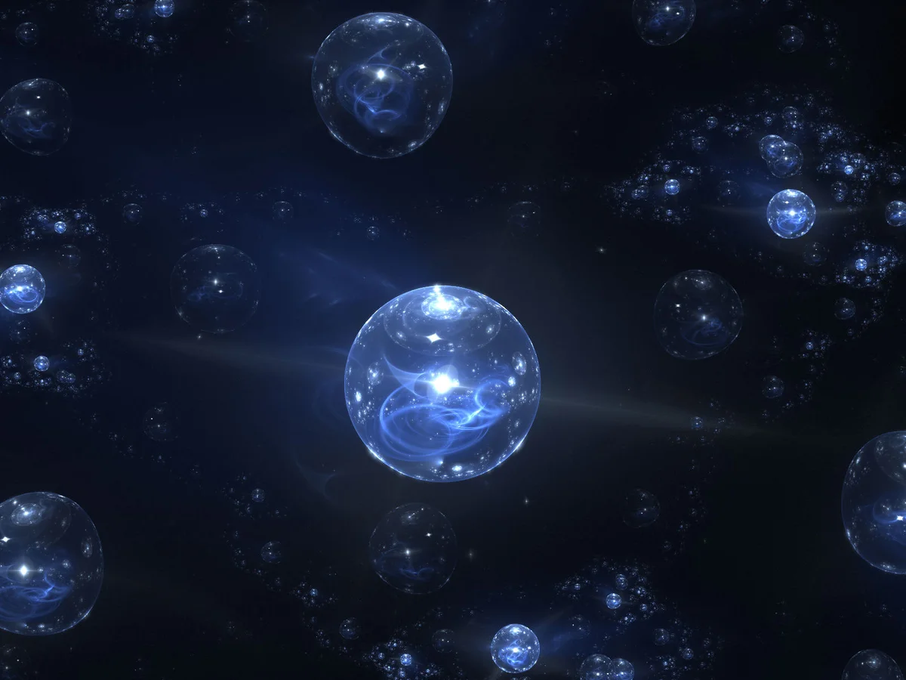

 То есть, Вселенных много и в каждой может произойти всё что угодно. Мультивселенная звучит круто, да. Вот, что говорил об этом Стивен Хокинг: «Где-то там Хиллари Клинтон – президент, и я – мировой рекордсмен в марафоне». Это же отлично! А вот для учёных это поражение. Потому что все эти сотни лет они пытаются узнать универсальные законы природы и найти ответы на все вопросы: Кто мы? Из чего состоим и где живём? А если Вселенных много, значит мы живём в случайном мире из 10^10^^10^^^7 степени других. Это очень много, и Большой взрыв – это просто пшик в мире других пшиков.